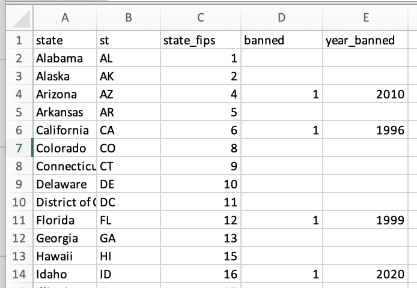
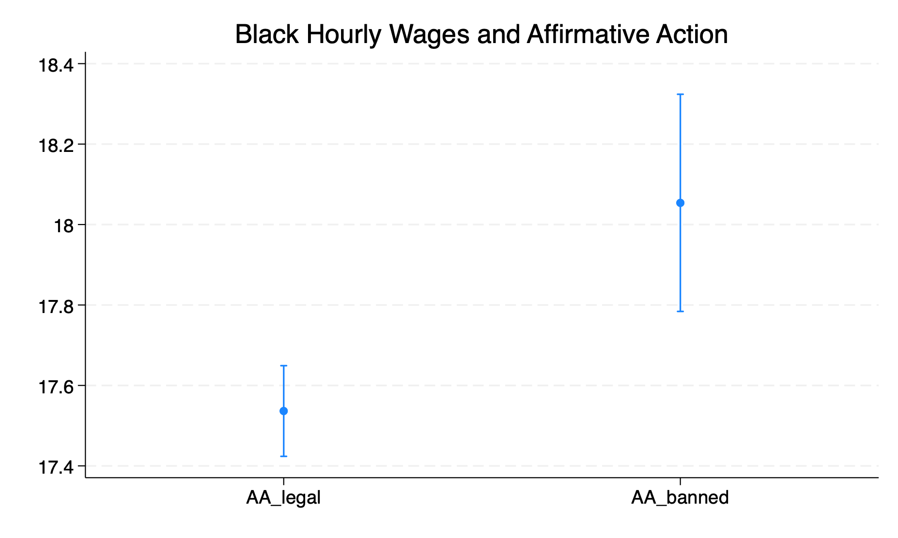
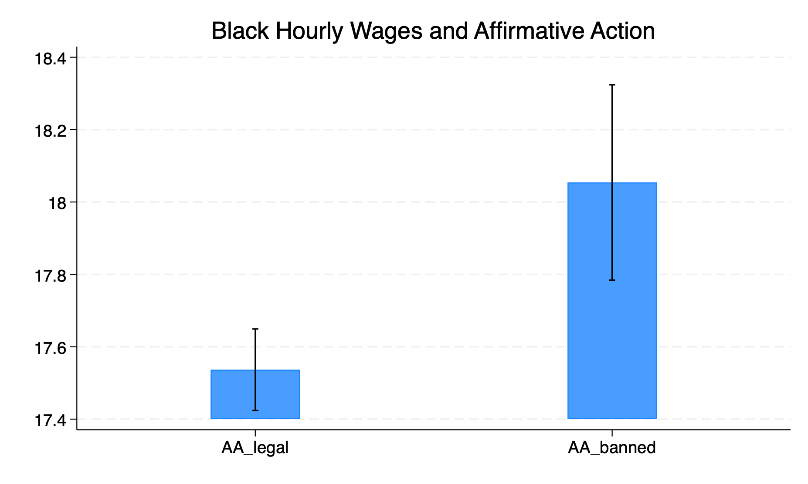
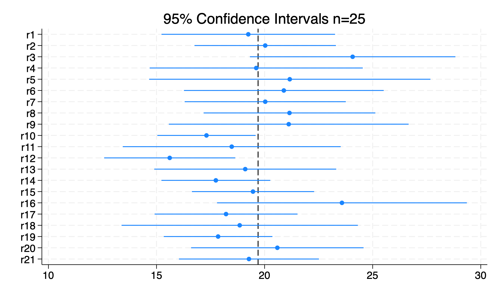
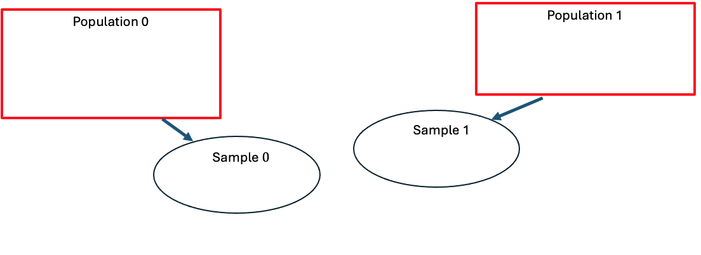

** Set Path **
cd "/Users/egong@middlebury.edu/Library/CloudStorage/Dropbox/Middlebury/Course_Archieve/Spring_2026/ECON_0111/2_Assignments/Labs/Lab_7_Clean_CI_ttest1/"ECON 111 - Lab 7 : Data Cleaning and CI
Affirmative Action
Preliminaries
Before beginning this lab, make sure you’ve:
Created a folder “Lab 7”
Downloaded the necessary data into the folder from the course site
install coefplot
ssc install coefplot
Affirmative Action Data
Suppose you found this map (https://www.bestcolleges.com/research/affirmative-action-statistics/#fn-6) that documents which states banned affirmative action prior to the 2023 Supreme Court ruling. Let’s convert this into data. The spreadsheet “affirm_action” does this and it is something that you can easily put together.

Now you need to import the spreadsheet and convert it into a STATA dataset (.dta)
import excel "affirm_action.xlsx", sheet("data") firstrow clear
des
sum(5 vars, 51 obs)
Contains data
Observations: 51
Variables: 5
-------------------------------------------------------------------------------
Variable Storage Display Value
name type format label Variable label
-------------------------------------------------------------------------------
state str20 %20s state
st str2 %9s st
state_fips byte %10.0g state_fips
banned byte %10.0g banned
year_banned int %10.0g year_banned
-------------------------------------------------------------------------------
Sorted by:
Note: Dataset has changed since last saved.
Variable | Obs Mean Std. dev. Min Max
-------------+---------------------------------------------------------
state | 0
st | 0
state_fips | 51 28.96078 15.83283 1 56
banned | 8 1 0 1 1
year_banned | 8 2007.75 7.57345 1996 2020We need to clean the data which means that we need to prepare the data so that we can do analysis. For example, let’s say we want to see the percentage of states that banned affirmative action.
sum banned
tab banned
Variable | Obs Mean Std. dev. Min Max
-------------+---------------------------------------------------------
banned | 8 1 0 1 1
banned | Freq. Percent Cum.
------------+-----------------------------------
1 | 8 100.00 100.00
------------+-----------------------------------
Total | 8 100.00Q1: What’s wrong? How do you fix it?
Now let’s save the dataset so we can use it later.
save affirm_action.dta, replaceCPS Data - Data Cleaning
use cps_lab7.dta, clearLet’s compare hourly wages between Black and white individuals. First look at hourly wages.
sum hourwage, detail
hourly wage
-------------------------------------------------------------
Percentiles Smallest
1% 12 .01
5% 999.99 .01
10% 999.99 .1 Obs 5,365,346
25% 999.99 .57 Sum of wgt. 5,365,346
50% 999.99 Mean 951.5748
Largest Std. dev. 212.4218
75% 999.99 999.99
90% 999.99 999.99 Variance 45123.03
95% 999.99 999.99 Skewness -4.160176
99% 999.99 999.99 Kurtosis 18.30975Yikes! What does the value 999.99 mean? Go to Google and search “ipums cps hourwage”. Let’s clean this variable
replace hourwage = . if hourwage==999.99
sum hourwage, detail(5,100,359 real changes made, 5,100,359 to missing)
hourly wage
-------------------------------------------------------------
Percentiles Smallest
1% 6 .01
5% 8.5 .01
10% 10 .1 Obs 264,987
25% 13 .57 Sum of wgt. 264,987
50% 17 Mean 19.69841
Largest Std. dev. 11.02163
75% 23 99.99
90% 32.5 99.99 Variance 121.4762
95% 40.86 99.99 Skewness 2.254302
99% 62.5 99.99 Kurtosis 10.90072Now let’s look at race.
tab race
des race
race | Freq. Percent Cum.
----------------------------------------+-----------------------------------
white | 5,640,048 78.80 78.80
black | 782,942 10.94 89.74
american indian/aleut/eskimo | 98,572 1.38 91.11
asian only | 414,802 5.80 96.91
hawaiian/pacific islander only | 36,809 0.51 97.42
white-black | 56,420 0.79 98.21
white-american indian | 50,267 0.70 98.91
white-asian | 36,733 0.51 99.43
white-hawaiian/pacific islander | 7,167 0.10 99.53
black-american indian | 6,609 0.09 99.62
black-asian | 2,936 0.04 99.66
black-hawaiian/pacific islander | 923 0.01 99.67
american indian-asian | 654 0.01 99.68
asian-hawaiian/pacific islander | 6,134 0.09 99.77
white-black-american indian | 5,392 0.08 99.84
white-black-asian | 1,445 0.02 99.86
white-american indian-asian | 951 0.01 99.88
white-asian-hawaiian/pacific islander | 6,045 0.08 99.96
white-black-american indian-asian | 303 0.00 99.96
american indian-hawaiian/pacific island | 319 0.00 99.97
white-black--hawaiian/pacific islander | 450 0.01 99.98
white-american indian-hawaiian/pacific | 385 0.01 99.98
black-american indian-asian | 166 0.00 99.98
white-american indian-asian-hawaiian/pa | 84 0.00 99.98
two or three races, unspecified | 331 0.00 99.99
four or five races, unspecified | 798 0.01 100.00
----------------------------------------+-----------------------------------
Total | 7,157,685 100.00
Variable Storage Display Value
name type format label Variable label
-------------------------------------------------------------------------------
race int %8.0g RACE raceWe know the variable race takes numerical values because “Storage type” is “int”. Variables take numerical outcomes if “storage type” is “double” or “byte” or “long”. A variable takes non-numerical outcomes if “storage type” is “str”. Do you see “value label”? It lists “RACE”. To see the underlying numbers for the value labels type label list RACE.
Generate an indicator that equals 1 if Black and 0 if White. We’ll then add a label. See the help menu help label.
gen black = 1 if race==200
replace black = 0 if race==100
label var black "==1 if Black"
tab black
label define BLACK 0 "White" 1 "Black"
label values black BLACK
tab black(6,374,743 missing values generated)
(5,640,048 real changes made)
==1 if |
Black | Freq. Percent Cum.
------------+-----------------------------------
0 | 5,640,048 87.81 87.81
1 | 782,942 12.19 100.00
------------+-----------------------------------
Total | 6,422,990 100.00
==1 if |
Black | Freq. Percent Cum.
------------+-----------------------------------
White | 5,640,048 87.81 87.81
Black | 782,942 12.19 100.00
------------+-----------------------------------
Total | 6,422,990 100.00Save this dataset. Should you save it as “cps_lab7.dta”?
ANSWER: NO. Never overwrite original data! Why? You want to be able to replicate your results starting with the original data. ALWAYS save data that you have cleaned/manipulated as a new dataset. I am going to save this dataset as “cps_lab7_clean.dta”.
save cps_lab7_clean.dta, replacefile cps_lab7_clean.dta savedNow merge our new dataset to the state-level affirm_action dataset. Try merge m:1 state_fips using affirm_action.dta
Q2: Why was there an error?
use cps_lab7_clean.dta, clear
rename statefip state_fips
merge m:1 state_fips using affirm_action.dta
drop _merge
save cps_aa_lab7_clean.dta, replace
Result Number of obs
-----------------------------------------
Not matched 0
Matched 7,157,685 (_merge==3)
-----------------------------------------
file cps_aa_lab7_clean.dta savedNote that after I do the merge, I save the dataset. Why? I can now simply open cps_aa_lab7_clean.dta to do my analysis (I don’t have to continue running the code above to clean the datasets).
Confidence Intervals
Let’s look to see how standard errors are calculated. Look at hourly wages for Black individuals.
sum hourwage if black==1
mean hourwage if black==1
Variable | Obs Mean Std. dev. Min Max
-------------+---------------------------------------------------------
hourwage | 30,145 17.6127 9.214165 1 99.99
Mean estimation Number of obs = 30,145
--------------------------------------------------------------
| Mean Std. err. [95% conf. interval]
-------------+------------------------------------------------
hourwage | 17.6127 .0530699 17.50868 17.71672
--------------------------------------------------------------Q3: How was the standard error calculated? How was the 95% confidence interval calculated?
Compare Hourly Wages
Let’s compare hourly wages for Black individuals between states with affirmative action vs states that banned it.
mean hourwage if black==1 & banned==0
mean hourwage if black==1 & banned==1
Mean estimation Number of obs = 25,703
--------------------------------------------------------------
| Mean Std. err. [95% conf. interval]
-------------+------------------------------------------------
hourwage | 17.53645 .057501 17.42374 17.64915
--------------------------------------------------------------
Mean estimation Number of obs = 4,442
--------------------------------------------------------------
| Mean Std. err. [95% conf. interval]
-------------+------------------------------------------------
hourwage | 18.0539 .1376893 17.78396 18.32384
--------------------------------------------------------------Now we want to visualize this. We’re going to use the command coefplot.
First, capture the 95% CI for hourly wages in states where affirmative action is legal using a matrix.
mean hourwage if black==1 & banned==0
return list
matrix results = r(table)[1,1] , r(table)[5,1], r(table)[6,1]
matrix list results
Mean estimation Number of obs = 25,703
--------------------------------------------------------------
| Mean Std. err. [95% conf. interval]
-------------+------------------------------------------------
hourwage | 17.53645 .057501 17.42374 17.64915
--------------------------------------------------------------
macros:
r(mcmethod) : "noadjust"
matrices:
r(table) : 9 x 1
results[1,3]
c1 c2 c3
r1 17.536449 17.423744 17.649155Second, capture the 95% CI for hourly wages in states where affirmative action was banned.
mean hourwage if black==1 & banned==1
matrix results = results \ r(table)[1,1] , r(table)[5,1], r(table)[6,1]
matrix list results
Mean estimation Number of obs = 4,442
--------------------------------------------------------------
| Mean Std. err. [95% conf. interval]
-------------+------------------------------------------------
hourwage | 18.0539 .1376893 17.78396 18.32384
--------------------------------------------------------------
results[2,3]
c1 c2 c3
r1 17.536449 17.423744 17.649155
r2 18.053897 17.783957 18.323837Label the contents of the matrix.
matrix colnames results = mean ll ul
matrix rownames results = AA_legal AA_banned
matrix list results
results[2,3]
mean ll ul
AA_legal 17.536449 17.423744 17.649155
AA_banned 18.053897 17.783957 18.323837Now we can plot the results that are stored in the matrix “results”
coefplot matrix(results[,1]), ci((results[,2] results[,3] ))We tell coefplot to use the matrix “results”. The first component is the mean (which is the blue dot) and after “ci” we tell coefplot the lower and upper bounds for the 95% confidence interval. We use “results[,1]” to indicate that we want all rows for the first column. For ci we state “results[,2]” and “results[,3]” to indicate we want all rows in columns 2 and 3.
Now let’s rotate the plot to be vertical and add “whiskers” to the ends of the confidence intervals. While we are at it, we add a title. We also have the option of generating a bar graph.
coefplot matrix(results[,1]), ci((results[,2] results[,3] )) ///
vertical ciopts(recast(rcap)) ///
title(Black Hourly Wages and Affirmative Action)
graph export "black_hourly_wages.png", replace
** Bar Graphs with CI **
coefplot matrix(results[,1]), ci((results[,2] results[,3] )) ///
vertical recast(bar) barwidth(0.25) ciopts(recast(rcap) lcolor(black)) citop ///
title(Black Hourly Wages and Affirmative Action)
graph export "black_hourly_wages_bar.png", replace

Q4: How do you interpret these results?
Simulations to understand confidence intervals
Let’s see how confidence intervals work. Assume the dataset is the population. And we are going to randomly sample 25 individuals and collect hourly wage data. First, randomly sort everyone to simulate a random sample.
set seed 100
gen random = uniform()
sort randomNow let’s obtain “mu” or the population mean for hourly wage.
sum hourwage
return list
scalar pop_mean = r(mean)
Variable | Obs Mean Std. dev. Min Max
-------------+---------------------------------------------------------
hourwage | 264,987 19.69841 11.02163 .01 99.99
scalars:
r(N) = 264987
r(sum_w) = 264987
r(mean) = 19.69840720488175
r(Var) = 121.4762269487028
r(sd) = 11.02162542226431
r(min) = .01
r(max) = 99.98999999999999
r(sum) = 5219821.83Note that there are 264,987 individuals with hourly wages. Let’s drop all individuals without hourly wages. If we didn’t do that, think about how that would affect our random sample.
drop if hourwage==.(6,892,698 observations deleted)We can now take a sample n = 25 and based on this sample, construct a 95% CI.
mean hourwage if _n>=1 & _n<=25
matrix ci_result = r(table)[1,1], r(table)[5,1], r(table)[6,1]
matrix list ci_result
Mean estimation Number of obs = 25
--------------------------------------------------------------
| Mean Std. err. [95% conf. interval]
-------------+------------------------------------------------
hourwage | 17.5588 1.995541 13.44021 21.67739
--------------------------------------------------------------
ci_result[1,3]
c1 c2 c3
r1 17.5588 13.440207 21.677393Now let’s do 20 more samples of n=25 and construct 95% CI for each sample.
forvalues i = 25(25)500 {
mean hourwage if _n>`i' & _n<=`i'+25
matrix ci_result = ci_result \ r(table)[1,1], r(table)[5,1], r(table)[6,1]
matrix list ci_result
}Now let’s plot the CI for all 21 samples.
coefplot matrix(ci_result[,1]), ci((ci_result[,2] ci_result[,3] )) ///
xline(`=scalar(pop_mean)') title(95% Confidence Intervals n=25)
graph export "ci_simulation_n25.png", replaceQ5: How do you interpret these results?

Hypothesis Testing (t-tests)
A hypothesis test can be used to test differences between two groups, in this case between states that banned affirmative action and states that did not.
We are going to evaluate whether hourly wages are different in states that banned affirmative action.
ttest hourwage, by(banned)
Two-sample t test with equal variances
------------------------------------------------------------------------------
Group | Obs Mean Std. err. Std. dev. [95% conf. interval]
---------+--------------------------------------------------------------------
0 | 203,764 19.60376 .0241944 10.92143 19.55634 19.65118
1 | 61,223 20.01343 .0458433 11.34313 19.92357 20.10328
---------+--------------------------------------------------------------------
Combined | 264,987 19.69841 .0214108 11.02163 19.65644 19.74037
---------+--------------------------------------------------------------------
diff | -.4096699 .0507907 -.5092183 -.3101214
------------------------------------------------------------------------------
diff = mean(0) - mean(1) t = -8.0658
H0: diff = 0 Degrees of freedom = 264985
Ha: diff < 0 Ha: diff != 0 Ha: diff > 0
Pr(T < t) = 0.0000 Pr(|T| > |t|) = 0.0000 Pr(T > t) = 1.0000Q6: What is the null and alternative hypothesis? What is the hourly wage of people who live in states that banned affirmative action? How does it compare to the hourly wage in states that did not ban affirmative action? What is the test statistic and what does it mean? What is the p-value and what does it mean? See if you can label the figure below.
